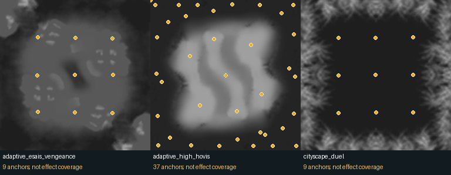

27 October 2026. Dataset map selection (Extract-06b) is owner-finalized and closed. This probe uses those 1,189 selected versions. It executes no map Lua, downloads no maps and does not change training inputs.
| Stored evidence | Maps | Meaning |
|---|---|---|
| Non-wave effect/weather candidates, union | 24 | Static evidence, not a count of effects active with defaults |
| Effect-related Lua candidates | 20 | Includes shared optional volcano code and custom prop scripts |
| Weather markers | 9 | Generator positions and weather definitions in _save.lua |
| Custom prop-script anchors recovered | 3 | 55 placed anchors; emitter IDs obtained from their scripts |
Explicit Effect marker |
1 | Narrow Shaft v2 has an empty EffectTemplate; no usable effect ID |
| Shoreline wave records | 196 | Separate .scmap section, 312,783 records; not rare special effects |
No structural wave/marker inventory failures across 1,189 maps. The candidate union overlaps categories. Absence of these signatures is not proof of no effects: effects can come from imported game scripts, unit/prop classes, custom blueprint scripts or generated runtime behavior outside this bounded scan.
_save.lua → Scenario.MasterChain...Markers. Effect
markers can carry EffectTemplate, position, offset, orientation, and
scale. Weather Definition markers describe weather names/chances/drift;
Weather Generator markers supply origins and cloud parameters. A weather
definition's position is not an effect footprint.*_script.lua may call CreateEmitterAtBone with an emitter .bp
path. Retain both the placed prop ID and the emitter ID; they are different
things. Some emitters are placed directly as emitter blueprints. Existing
extraction already identifies six such instances in Adaptive High Hovis..scmap binary wave-generator section before terrain
layers. Position, rotation, velocity, texture/ramp strings and ten remaining
float parameters are recoverable. This probe preserves those floats without
assigning unverified parameter semantics. These are separate from the binary
water settings, terrain textures, decals and skybox.Source evidence is the local selected map files, the existing structural SCMAP reader, and saved entity extraction. See also the game's emitter utility usage for examples of attached emitters, blueprint paths, scale and lifetime changes. No general emitter behavior or visual radius is inferred from its filename.
Recovered custom prop-script anchor locations:

The prototypes save 1 × 256 × 256 anchor heatmaps at native x/z positions,
with a fixed three-pixel Gaussian for illustration only. Orange dots mark origins
over terrain. This is not rendered effect coverage, intensity, physical size,
time persistence, or proof that an effect is active. No rotation/canonicalization
or symmetry replication was applied. IDs and raw positions remain in JSON.
The simple placed-origin subset is feasible. The general layer is not a single straightforward mask. For example, Adaptive Twilight Hill attaches probabilistic, temporary lightning emitters to surviving crystals. Several adaptive scripts share volcano functions with option-dependent behavior. Weather moves and drifts; an origin heatmap cannot represent its full visible extent. Even a custom prop's script being present does not prove an instance is active under engine defaults.
Defer the general effects tensor at this low priority. Keep this inventory and the three prototypes. Do not add empty effect targets to the remaining maps or claim absent effects as supervised negatives. A future implementation can begin with explicit static anchors and validity masks; defaults/runtime interpretation belongs with Extract-14/11 rather than this quick probe. No effects model is trained and no source-layer training contract is changed.
Run directory data/processed/map_effects_feasibility_v1: script_scan.json
retains the broad first pass (including ordinary blueprint references, deliberately
not counted as effect candidates); script_candidates.json filters actual
effect/weather signatures. static_inventory.json preserves wave records and
raw weather/effect marker blocks. placed_effects.json inventories previously
classified emitter blueprints; custom_prop_anchors.json joins custom scripts to
placed instance positions. Prototype NPZ/PNG files are analysis artifacts only.